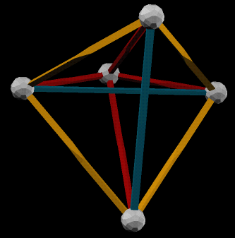

Zome 5-Cell with Ghost Symmetry
Introduction.
The 5-cell is the simplest 4-dimensional regular polytope, consisting of 5 equivalent tetrahedral cells. We can experience this in three dimensions only by projecting from 4D down to 3D.
There is a well-known orthogonal projection that can be built in Zome:
The two images above form a "wall-eyed" stereo pair, as opposed to a "cross-eyed" pair. Also, importantly, you can click on either image to load the model in vZome, using Java Web Start. This is true for all
the images in the table below, as well.
Until recently, my friend, David Richter, and I believed that there
was no other orthogonal 3D projection of the 5-cell that could be constructed with Zome. This turns out to be false. I recently stumbled upon such a projection, and
David saw immediately that this implied that the entire family of 9 uniform A4 polytopes could also be projected in this manner. Furthermore, David showed that there are two other rZome-constructible projections, one using red, yellow, and blue, and one using just yellow and blue.
The remarkable thing about this projection is that it exhibits "ghost symmetry". This is our term
for a phenomenon wherein the symmetry of a 4D object is subtly exposed in a 3D projection.
Specifically, in this example, the new projection of the 5-cell has a 3D symmetry group that is nearly as simple as you can get: two orthogonal mirrors. It certainly does not have any overt fivefold symmetry in 3D. Nonetheless, there are two axes along which one can project orthogonally to 2D and
obtain perfect fivefold symmetry!
The table below shows stereo pairs for the new 5-cell projection, and the other 8 uniform A4 polytopes. It also shows the "ghost symmetry" 2D projection for each. For explanation of the additional data in the table, and for more discussion of the A4 Coxeter group, see David's page on the other Zome projections of the A4 family.
All of these are constructible in real Zome, in principle. In fact, several of them are challenging to build, due to the false intersections at inconvenient places, or simply due to the high degree of interconnectedness, making it difficult to get all the struts in place at the same time. One alternative is to build the "hidden cell removed" versions, where half of the interior struts are omitted. This corresponds to projecting only one hemisphere of the 4D hypersphere into 3D.
The Models.
|
 |
|
8 / 1000 / (0)----0-----0-----0
or
1 / 0001 / 0-----0-----0----(0)
v=5, e=10, f=10{3},
5 tetrahedra.
This is the regular pentachoron.
|
|

|
|
4 / 0100 / 0----(0)----0-----0
or
2 / 0010 / 0-----0----(0)----0
v=10, e=30, f=(10+20){3},
5 tetrahedra, 5 octahedra.
One may obtain this by truncating the regular pentachoron to its edge midpoints.
|
|
|
|
C / 1100 / (0)---(0)----0-----0
or
3 / 0011 / 0-----0----(0)---(0)
v=20, e=10+30, f=20{3}+10{6},
5 tetrahedra, 5 truncated tetrahedra.
This is the truncated pentachoron.
|
|
|
|
A / 1010 / (0)----0----(0)----0
or
5 / 0101 / 0----(0)----0----(0)
v=30, e=30+60, f=(10+20+20){3}+30{4},
5 octahedra, 5 cuboctahedra, 10 triangular prisms.
|
|
|
|
9 / 1001 / (0)----0-----0----(0)
v=20, e=60, f=40{3}+30{4},
5+5 tetrahedra, 10+10 triangular prisms.
|
|
|
|
6 / 0110 / 0----(0)---(0)----0
v=30, e=60, f=20{3}+20{6},
5+5 truncated tetrahedra.
|
|
|
|
E / 1110 / (0)---(0)---(0)----0
or
7 / 0111 / 0----(0)---(0)---(0)
v=60, e=30+30+60, f=20{3}+30{4}+(10+20){6},
5 truncated tetrahedra, 5 truncated octahedra, 10 triangular prisms.
|
|
|
|
D / 1101 / (0)---(0)----0----(0)
or
B / 1011 / (0)----0----(0)---(0)
v=60, e=30+60+60, f=(20+20){3}+(30+30){4}+20{6},
5 cuboctahedra, 5 truncated tetrahedra, 10 triangular prisms, 10 hexagonal prisms.
|
|
|
|
F / 1111 / (0)---(0)---(0)---(0)
v=120, e=60+60+60+60, f=(30+60){4}+(20+40){6},
5+5 truncated octahedra, 10+10 hexagonal prisms.
|
David Richter's Zome Projects Index
vZome Home